---
layout: default
title: Last-mile delay survey / 2018-06-01 / AS4764
---
AS4764, WIDEBAND-AS-AP Aussie Broadband, AU
Summary
- Daily last-mile fluctuations: low
- Number of probes: 11
- APNIC eyeball rank: 743
- Daily fluctuations: True
- Main frequency: 0.0417
- Average peak-to-peak amplitude: 0.63ms
Aggregated last-mile queuing delay
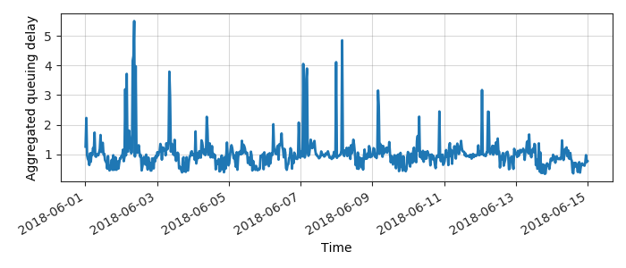
Periodogram
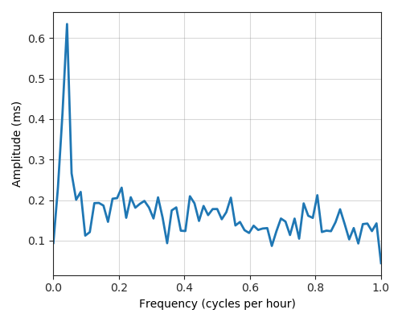
24H profile
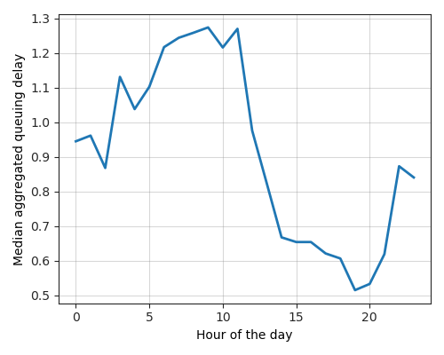
Probes' last-mile RTT
- 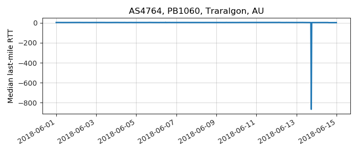
- 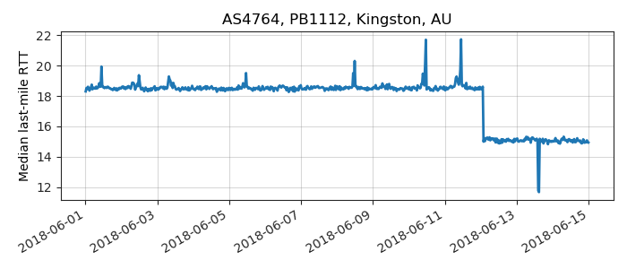
- 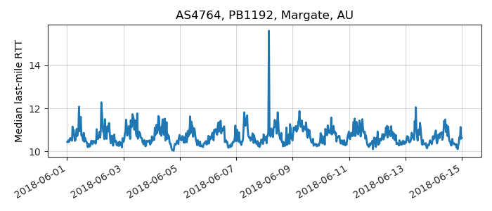
- 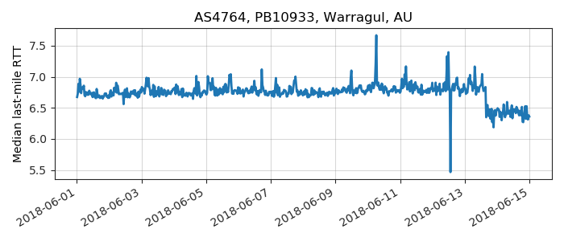
- 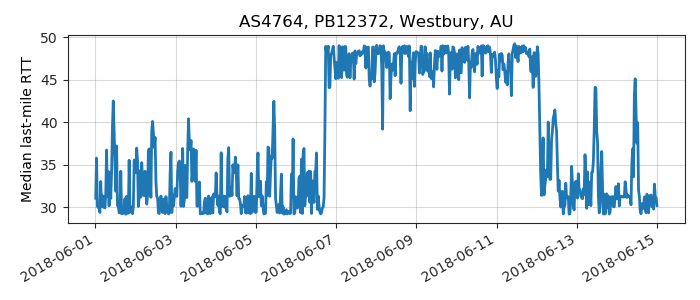
- 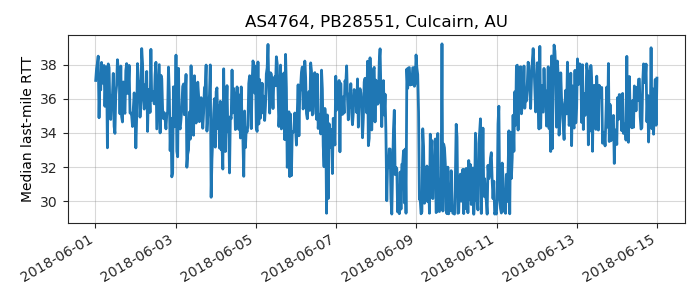
- 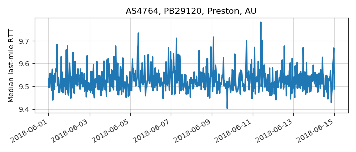
- 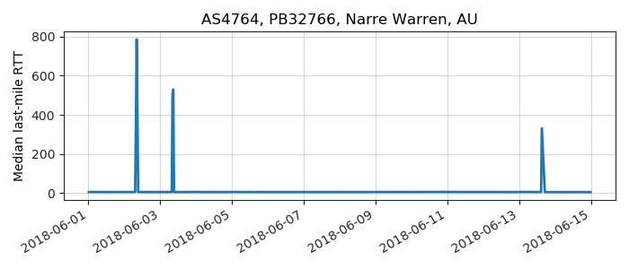
- 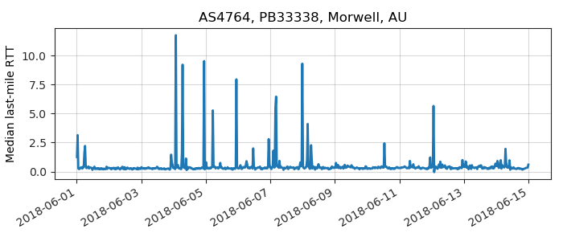
- 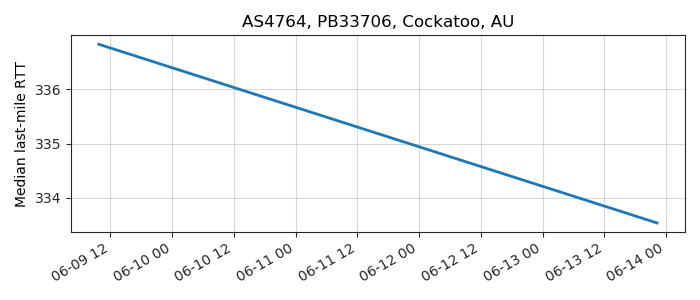
- 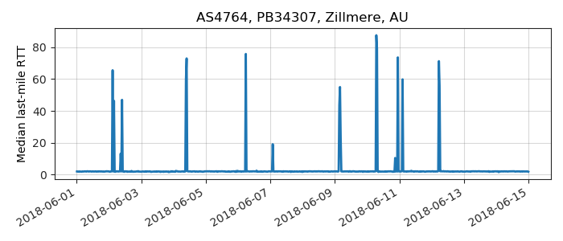